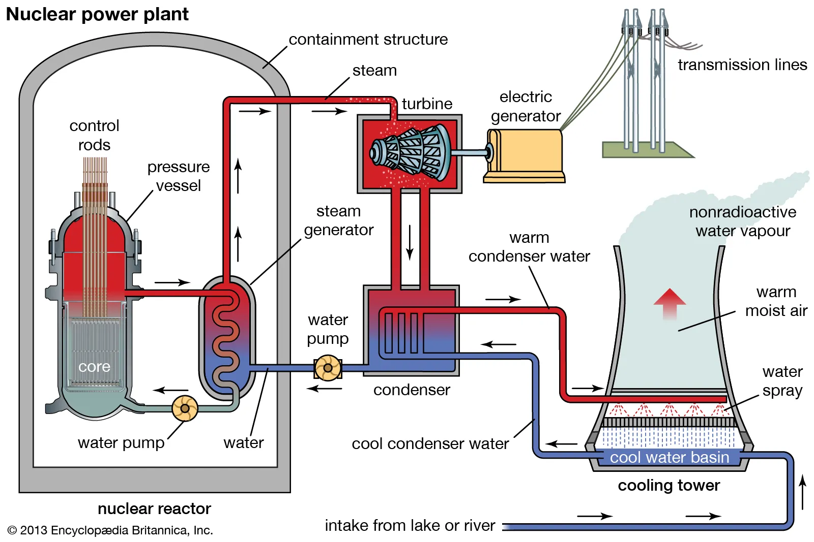

Uses of Radioactivity
Food irradiation
- Kills bacteria and other pathogens
- Does not make food radioactive
- Does not get rid of toxins
Chain reaction
- Requires the uranium 235 isotope
- One neutron to start the chain reaction
- The uranium 235 then decays into a bunch of other unstable atoms,
releasing 2 neutrons in the process
- The 2 neutrons is then used to make other uranium 235 decay
- When it decays it loses some mass, it is loss as energy
- The energy is then used for whatever perpose
Nuclear power plant
Diagram

- 3 isolated water cycles thing between the reactor and the river
- In the reactor, control rods absorb neutrons to control the rate of
decay (so it doesn’t go boom)
- Each control rods are very thin so they are not capable of absorbing
the neutrons that they produced themselves
- When all rods are down it absorbs all the neutrons and shuts the
reactor down
Back to index page